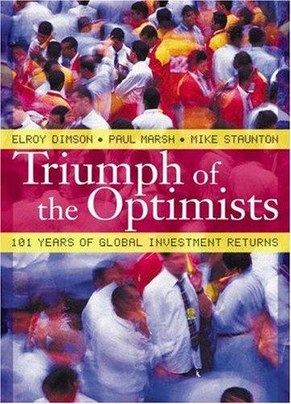

埃尔罗伊·迪姆森（Elroy Dimson）、保罗·马什（Paul Marsh）与迈克·斯坦顿（Mike Staunton）均是伦敦商学院（London Business School）的金融学教授。《乐观主义者的胜利》出版于2002年，由普林斯顿大学出版社（Princeton University Press）发行，ISBN为9780691091945。这本书的问世，标志着金融学界第一次以严格统一的方法，系统整理并分析了横跨十六个国家、长达一个世纪的资产回报数据。研究覆盖的市场包括美国、英国、日本、法国、德国、加拿大、意大利、西班牙、瑞士、澳大利亚、荷兰、瑞典、比利时、爱尔兰、丹麦与南非，时间跨度从1900年至2000年，正好横越两次世界大战、大萧条、多轮通货膨胀与数次市场崩盘。三位作者在此后每年定期更新数据，使其成为全球投资研究中最权威的长期回报数据库之一。
这本书在实证金融领域的贡献体现在多个层面。首先，作者们揭示了“幸存者偏差”（survivorship bias）对历史业绩研究的系统性扭曲：许多早期的资本市场研究仅聚焦于最终胜出的市场（尤其是美国），而忽略了那些因战争、革命或经济崩溃而消失或严重萎缩的市场，这导致历史回报数据普遍被高估。其次，书中对“股权风险溢价”（equity risk premium）给出了迄今最全面的实证估算。数据显示，1900年至2000年间，美国股市相对于短期国债的年化超额回报约为5.8%，全球加权平均约为4.9%；但作者同时警示，鉴于二十世纪是人类历史上经济增长最为集中的百年，投资者不应将这一历史溢价机械地外推至未来，他们估计未来的股权风险溢价可能更接近3%至4%。
书名“乐观主义者的胜利”本身便是一个经过百年数据检验的结论：那些在二十世纪初选择长期持有股票而非债券或现金的投资人，尽管历经数次灾难性的市场动荡，最终仍实现了显著超越通胀的真实财富积累。但迪姆森等人对这一结论的表述相当审慎——他们并非简单地宣扬“股票长期必涨”，而是强调：这种胜利属于那些有能力长期持有、不被短期波动吓退、并真正分散投资于全球市场的投资者。书中对各国长达百年的通货膨胀调整后回报的比较，深刻揭示了地缘政治风险、货币风险以及制度稳定性对长期财富保值的根本影响。
《乐观主义者的胜利》自出版以来，被学术界与投资实务界广泛引用，成为资产配置、养老金规划和长期投资策略领域不可绕过的参考文献。先锋基金（Vanguard）创始人约翰·博格尔（John Bogle）曾多次援引该书的研究成果，以支持其低成本指数化投资的核心主张。该书的数据库后来持续扩展为“瑞士信贷全球投资回报年鉴”（Credit Suisse Global Investment Returns Yearbook），每年向全球机构投资者提供最新的长期回报更新，可见其影响力已远超一本单纯的学术著作。对于任何认真研究长期资产配置问题的投资人而言，这本书提供了一个无可替代的实证基础。